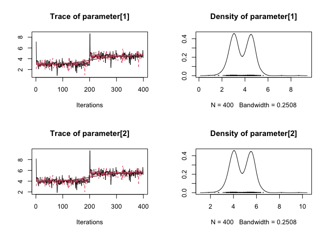

mcmcr is an R package to manipulate Monte Carlo Markov Chain (MCMC) samples.
Introduction
For the purposes of this discussion, an MCMC sample represents the value of a term from a single iteration of a single chain. While a simple parameter such as an intercept corresponds to a single term, more complex parameters such as an interaction between two factors consists of multiple terms with their own inherent dimensionality - in this case a matrix. A set of MCMC samples can be stored in different ways.
Existing Classes
The three most common S3 classes store MCMC samples as follows:
-
coda::mcmcstores the MCMC samples from a single chain as a matrix where each each row represents an iteration and each column represents a variable -
coda::mcmc.liststores multiplemcmcobjects (with identical dimensions) as a list where each object represents a parallel chain -
rjags::mcarraystores the samples from a single parameter where the initial dimensions are the parameter dimensions, the second to last dimension is iterations and the last dimension is chains.
In the first two cases the terms/parameters are represented by a single dimension which means that the dimensionality inherent in the parameters is stored in the labelling of the variables, ie, "bIntercept", "bInteraction[1,2]", "bInteraction[2,1]", .... The structure of the mcmc and mcmc.list objects emphasizes the time-series nature of MCMC samples and is optimized for thining. In contrast mcarray objects preserve the dimensionality of the parameters.
New Classes
The mcmcr package defines three related S3 classes which also preserve the dimensionality of the parameters:
-
mcmcr::mcmcarrayis very similar torjags::mcarrayexcept that the first dimension is the chains, the second dimension is iterations and the subsequent dimensions represent the dimensionality of the parameter (it is calledmcmcarrayto emphasize that the MCMC dimensions ie the chains and iterations come first); -
mcmcr::mcmcrstores multiple uniquely namedmcmcarrayobjects with the same number of chains and iterations. -
mcmcr::mcmcrsstores multiplemcmcrobjects with the same parameters, chains and iterations.
All five classes (mcmc, mcmc.list, mcarray, mcmcarray, mcmcr and mcmcrs) are collectively referred to as MCMC objects.
Why mcmcr?
mcmcarray objects were developed to facilitate manipulation of the MCMC samples. mcmcr objects were developed to allow a set of dimensionality preserving parameters from a single analysis to be manipulated as a whole. mcmcrs objects were developed to allow the results of multiple analyses using the same model to be manipulated together.
The mcmcr package (together with the term and nlist packages) introduces a variety of (often) generic functions to manipulate and query mcmcarray, mcmcr and mcmcrs objects (and term and nlist and nlists objects).
In particular it provides functions to
- coerce from and to
mcarray,mcmcandmcmc.listobjects; - extract an objects
coeftable (as a tibble); - query an object’s
nchains,niters,term::npars,term::nterms,nlist::nsimsandnlist::nsamsas well as it’s parameter dimensions (term::pdims) and term indices (term::tindex); -
subsetobjects by chains, iterations and/or parameters; -
bind_xxa pair of objects by theirxx_chains,xx_iterations,xx_parametersor (parameter)xx_dimensions; - combine the samples of two (or more) MCMC objects using
combine_samples(orcombine_samples_n) or combine the samples of a single MCMC object by reducing its dimensions usingcombine_dimensions; -
collapse_chainsorsplit_chainsan object’s chains; -
mcmc_mapover an objects values; - transpose an objects parameter dimensions using
mcmc_aperm; - assess if an object has
convergedusingrhatandesr(effectively sampling rate); - and of course
thin,rhat,ess(effective sample size),print,plotetc said objects.
The code is opinionated which has the advantage of providing a small set of stream-lined functions. For example the only ‘convergence’ metric is the uncorrected, untransformed, univariate split R-hat (potential scale reduction factor). If you can convince me that additional features are important I will add them or accept a pull request (see below). Alternatively you might want to use the mcmcr package to manipulate your samples before coercing them to an mcmc.list to take advantage of all the summary functions in packages such as coda.
Demonstration
library(mcmcr)
#> Registered S3 method overwritten by 'mcmcr':
#> method from
#> as.mcmc.nlists nlist
mcmcr_example
#> $alpha
#> [1] 3.718025 4.718025
#>
#> nchains: 2
#> niters: 400
#>
#> $beta
#> [,1] [,2]
#> [1,] 0.9716535 1.971654
#> [2,] 1.9716535 2.971654
#>
#> nchains: 2
#> niters: 400
#>
#> $sigma
#> [1] 0.7911975
#>
#> nchains: 2
#> niters: 400
coef(mcmcr_example, simplify = TRUE)
#> term estimate lower upper svalue
#> 1 alpha[1] 3.7180250 2.2120540 5.232403 9.645658
#> 2 alpha[2] 4.7180250 3.2120540 6.232403 9.645658
#> 3 beta[1,1] 0.9716535 0.2514796 1.713996 5.397731
#> 4 beta[2,1] 1.9716535 1.2514796 2.713996 7.323730
#> 5 beta[1,2] 1.9716535 1.2514796 2.713996 7.323730
#> 6 beta[2,2] 2.9716535 2.2514796 3.713996 9.645658
#> 7 sigma 0.7911975 0.4249618 2.559520 9.645658
rhat(mcmcr_example, by = "term")
#> $alpha
#> [1] 2.002 2.002
#>
#> $beta
#> [,1] [,2]
#> [1,] 1.147 1.147
#> [2,] 1.147 1.147
#>
#> $sigma
#> [1] 1
plot(mcmcr_example[["alpha"]])
Installation
Release
To install the release version from CRAN.
install.packages("mcmcr")The website for the release version is at https://poissonconsulting.github.io/mcmcr/.
Development
To install the development version from GitHub
# install.packages("remotes")
remotes::install_github("poissonconsulting/mcmcr")or from r-universe.
install.packages("mcmcr", repos = c("https://poissonconsulting.r-universe.dev", "https://cloud.r-project.org"))Code of Conduct
Please note that the mcmcr project is released with a Contributor Code of Conduct. By contributing to this project, you agree to abide by its terms.